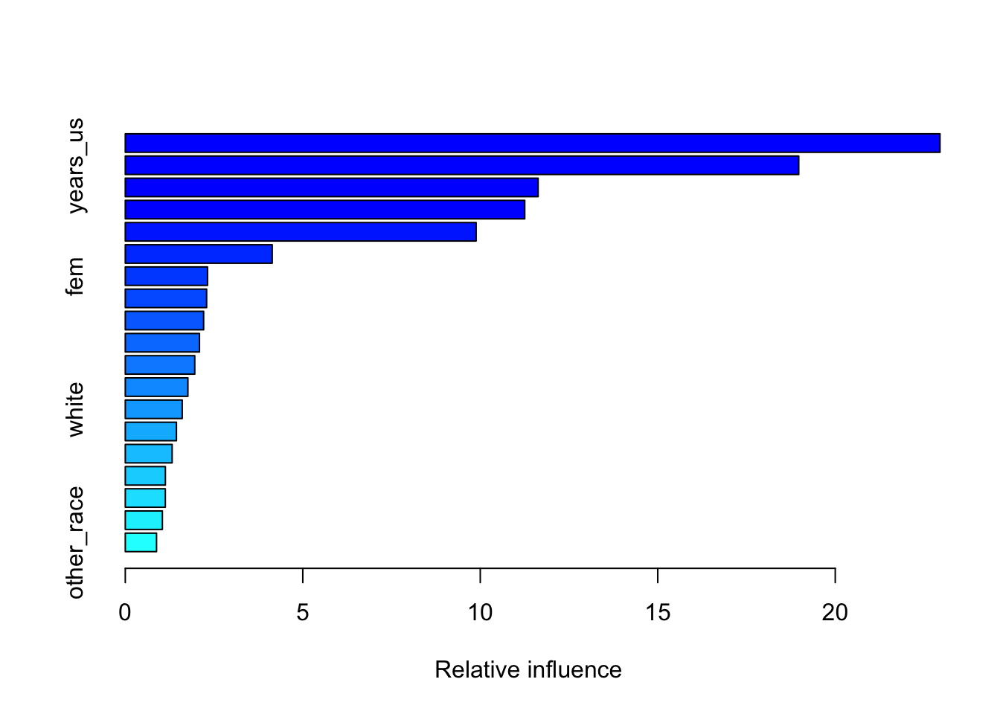

The following objects are masked from 'package:stats':
filter, lag
The following objects are masked from 'package:base':
intersect, setdiff, setequal, union
library(readr)library(gbm)
Loaded gbm 2.2.3
This version of gbm is no longer under development. Consider transitioning to gbm3, https://github.com/gbm-developers/gbm3
library(caret)
Loading required package: ggplot2
Loading required package: lattice
# Set project paths# This lets the same file run on Windows or Mac.if (Sys.info()["sysname"] =="Windows") { base_dir <-"G:/Shared drives/Undocu Research"} else { base_dir <-"~/Library/CloudStorage/GoogleDrive-vsovero@ucr.edu/Shared drives/Undocu Research"}data_path <-file.path(base_dir, "Data")
2. Read cleaned SIPP and ACS files
# SIPP donor/training file created from Stata cleaningsipp <-read_csv(file.path(data_path, "(Step 1 output) Core_TM SIPP 2008 Wave 2.csv"),show_col_types =FALSE)# ACS target sample created from Stata cleaningacs <-read_csv(file.path(data_path, "ACS Target Sample.csv"),show_col_types =FALSE)
3. Define model variables
# These are the predictor variables used in BOTH SIPP and ACS.# Race enters as separate race dummies, not as the raw race code.# years_us_missing is included because missing years_us was filled with 0 in Stata.features <-c("age","fem","married","cit_spouse","medicaid","nonfluent","spanish_hispanic_latino","central_latino","bpl_asia","household_size","poverty","asian","black","white","other_race","employed","years_us","years_us_missing","yrsed")# Explicit model formula.# This is intentionally written out for transparency.gbm_formula <- undocu_likely ~ age + fem + married + cit_spouse + medicaid + nonfluent + spanish_hispanic_latino + central_latino + bpl_asia + household_size + poverty + asian + black + white + other_race + employed + years_us + years_us_missing + yrsed
4. Prepare SIPP and ACS model samples
# Convert SIPP outcome to numeric 0/1.# The SIPP file may store 1 as "X1", "1", or numeric 1 depending on export.sipp <- sipp %>%mutate(undocu_likely =ifelse(undocu_likely %in%c("X1", "1", 1), 1, 0) )# Explicit SIPP age restriction.# The older code implicitly dropped ages 0-14 because yrsed was missing# outside the education-question universe. This makes that restriction visible.sipp <- sipp %>%filter(age >=18)# Keep SIPP rows that are complete on the outcome, model predictors, and college.# college is not used for training, but is needed later to define the# target-like SIPP validation group.sipp <- sipp[complete.cases(sipp[, c("undocu_likely", features, "college")]), ]# Keep ACS rows that are complete on merge keys and model predictors.# These are the rows that will receive predicted probabilities.acs <- acs[complete.cases(acs[, c("year", "serial", "pernum", features)]), ]
5. Split SIPP into training and test samples
set.seed(1)# Split SIPP into 70% training and 30% test.# The model is trained only on train_gbm.# The test sample is used to define probability thresholds.train_index <-createDataPartition( sipp$undocu_likely,p =0.70,list =FALSE)train_gbm <- sipp[train_index, ]test_gbm <- sipp[-train_index, ]cat("Training N:", nrow(train_gbm), "\n")
set.seed(1)# Train one GBM model on the full SIPP training sample.# These parameters match the leading GBM setup used previously.gbm_model <-gbm(formula = gbm_formula,data = train_gbm,distribution ="bernoulli",verbose =FALSE,cv.folds =10,n.trees =3500,shrinkage =0.005,interaction.depth =6)# Use cross-validation inside gbm to choose the number of trees.optimal_trees_gbm <-gbm.perf( gbm_model,method ="cv",plot.it =FALSE)cat("Optimal number of trees:", optimal_trees_gbm, "\n")
Optimal number of trees: 1644
# Variable importance summarysummary(gbm_model)

var rel.inf
age age 22.9508741
years_us years_us 18.9719449
central_latino central_latino 11.6298723
yrsed yrsed 11.2534173
household_size household_size 9.8835692
cit_spouse cit_spouse 4.1393809
fem fem 2.3167035
years_us_missing years_us_missing 2.2910793
nonfluent nonfluent 2.2069046
employed employed 2.0896729
poverty poverty 1.9570695
married married 1.7638984
white white 1.6037763
spanish_hispanic_latino spanish_hispanic_latino 1.4405029
medicaid medicaid 1.3197288
asian asian 1.1292186
black black 1.1276715
bpl_asia bpl_asia 1.0446023
other_race other_race 0.8801128
7. Predict probabilities in SIPP test sample and ACS target sample
# Predicted probability for held-out SIPP test observations.test_gbm$gbm_undocu_p <-predict( gbm_model,newdata = test_gbm,n.trees = optimal_trees_gbm,type ="response")# Predicted probability for ACS target observations.acs$gbm_undocu_p <-predict( gbm_model,newdata = acs,n.trees = optimal_trees_gbm,type ="response")
8. Define quartiles using full SIPP test sample
# Full-SIPP quartiles reproduce the original leading-file logic.# The cutpoints are based on the full held-out SIPP test sample.# ACS cases are then classified using these same cutpoints.full_sipp_breaks <-quantile( test_gbm$gbm_undocu_p,probs =c(0, .25, .50, .75, 1),na.rm =TRUE)# Extend endpoints so ACS values outside the SIPP test range are not coded as NA.full_sipp_breaks[1] <--Inffull_sipp_breaks[5] <-Inftest_gbm$gbm_undocu_q_full <-cut( test_gbm$gbm_undocu_p,breaks = full_sipp_breaks,include.lowest =TRUE,labels =c("Q1", "Q2", "Q3", "Q4"))acs$gbm_undocu_q_full <-cut( acs$gbm_undocu_p,breaks = full_sipp_breaks,include.lowest =TRUE,labels =c("Q1", "Q2", "Q3", "Q4"))# Check how well the full-SIPP quartiles rank true positives in SIPP.full_sipp_quartiles <- test_gbm %>%group_by(gbm_undocu_q_full) %>%summarise(n =n(),undocu_likely_n =sum(undocu_likely ==1),undocu_likely_share =mean(undocu_likely ==1),mean_p =mean(gbm_undocu_p),.groups ="drop" )# Check how ACS cases are distributed across the full-SIPP quartile cutpoints.acs_full_quartiles <- acs %>%group_by(gbm_undocu_q_full) %>%summarise(n =n(),share =n() /nrow(acs),mean_p =mean(gbm_undocu_p),.groups ="drop" )full_sipp_quartiles
9. Define quartiles using target-like SIPP test sample
# Target-like SIPP reference group.# This is NOT used to train the model.# It is only used to create a second set of quartile cutpoints that better# matches the ACS target sample: college graduates, employed, ages 22-55.sipp_targetlike_test <- test_gbm %>%filter( college ==1, employed ==1, age >=22, age <=55 )targetlike_breaks <-quantile( sipp_targetlike_test$gbm_undocu_p,probs =c(0, .25, .50, .75, 1),na.rm =TRUE)# Extend endpoints so ACS values outside the SIPP target-like range are retained.targetlike_breaks[1] <--Inftargetlike_breaks[5] <-Infsipp_targetlike_test$gbm_undocu_q_targetlike <-cut( sipp_targetlike_test$gbm_undocu_p,breaks = targetlike_breaks,include.lowest =TRUE,labels =c("Q1", "Q2", "Q3", "Q4"))acs$gbm_undocu_q_targetlike <-cut( acs$gbm_undocu_p,breaks = targetlike_breaks,include.lowest =TRUE,labels =c("Q1", "Q2", "Q3", "Q4"))# Check how well the target-like quartiles rank true positives in the# target-like SIPP test group.targetlike_sipp_quartiles <- sipp_targetlike_test %>%group_by(gbm_undocu_q_targetlike) %>%summarise(n =n(),undocu_likely_n =sum(undocu_likely ==1),undocu_likely_share =mean(undocu_likely ==1),mean_p =mean(gbm_undocu_p),.groups ="drop" )# Check how ACS cases are distributed across the target-like SIPP cutpoints.acs_targetlike_quartiles <- acs %>%group_by(gbm_undocu_q_targetlike) %>%summarise(n =n(),share =n() /nrow(acs),mean_p =mean(gbm_undocu_p),.groups ="drop" )targetlike_sipp_quartiles
# Original high-recall definition.# Sort true positives in the full SIPP test sample by predicted probability.# The cutoff is the lowest probability among the top 75% of true positives.top_75_full <- test_gbm %>%filter(undocu_likely ==1) %>%arrange(desc(gbm_undocu_p)) %>%mutate(rank =row_number(),cumulative_p = rank /n(),top_75 = cumulative_p <=0.75 ) %>%filter(top_75 ==TRUE)threshold_75_full <-min(top_75_full$gbm_undocu_p)# Target-like high-recall threshold.# Same logic, but only among true positives in the target-like SIPP test group.top_75_targetlike <- sipp_targetlike_test %>%filter(undocu_likely ==1) %>%arrange(desc(gbm_undocu_p)) %>%mutate(rank =row_number(),cumulative_p = rank /n(),top_75 = cumulative_p <=0.75 ) %>%filter(top_75 ==TRUE)threshold_75_targetlike <-min(top_75_targetlike$gbm_undocu_p)cat("Full-SIPP high-recall threshold:", threshold_75_full, "\n")
# Export file used by the Stata EO_Final reintegration do-file.## Legacy downstream variables:# gbm_high_prob = Q4 using full-SIPP test quartiles# gbm_low_prob = Q1 using full-SIPP test quartiles# gbm_high_recall = high-recall threshold from full SIPP test positives## Additional target-like variables are exported separately so they can be used# for robustness or comparison without replacing the legacy definitions.acs_gbm_export <- acs %>%mutate(gbm_high_prob =ifelse(gbm_undocu_q_full =="Q4", 1, 0),gbm_low_prob =ifelse(gbm_undocu_q_full =="Q1", 1, 0),gbm_high_recall =ifelse(gbm_undocu_p >= threshold_75_full, 1, 0),gbm_high_prob_targetlike =ifelse(gbm_undocu_q_targetlike =="Q4", 1, 0),gbm_low_prob_targetlike =ifelse(gbm_undocu_q_targetlike =="Q1", 1, 0),gbm_high_recall_targetlike =ifelse(gbm_undocu_p >= threshold_75_targetlike, 1, 0) ) %>%select( gbm_undocu_p, gbm_undocu_q_full, gbm_high_prob, gbm_low_prob, gbm_high_recall, gbm_undocu_q_targetlike, gbm_high_prob_targetlike, gbm_low_prob_targetlike, gbm_high_recall_targetlike, year, serial, pernum )write_csv( acs_gbm_export,file.path(data_path, "ACS_SIPP_gbm.csv"))
13. Save model and threshold metadata
# Save the model and threshold choices so later files do not have to re-create them.model_metadata <-list(features = features,optimal_trees_gbm = optimal_trees_gbm,full_sipp_breaks = full_sipp_breaks,targetlike_breaks = targetlike_breaks,threshold_75_full = threshold_75_full,threshold_75_targetlike = threshold_75_targetlike,training_n =nrow(train_gbm),test_n =nrow(test_gbm),created_at =Sys.time())saveRDS(gbm_model, file.path(data_path, "gbm_model_full_sipp.rds"))saveRDS(model_metadata, file.path(data_path, "gbm_model_metadata.rds"))